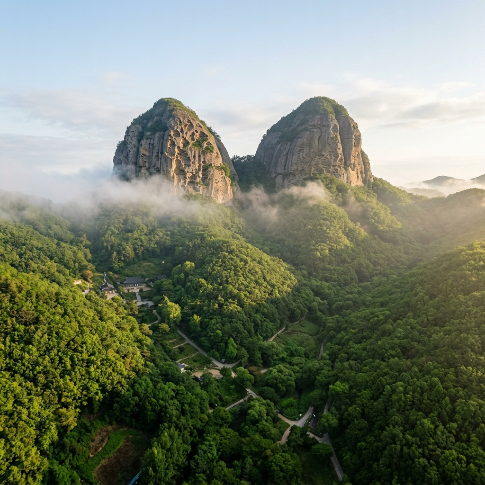
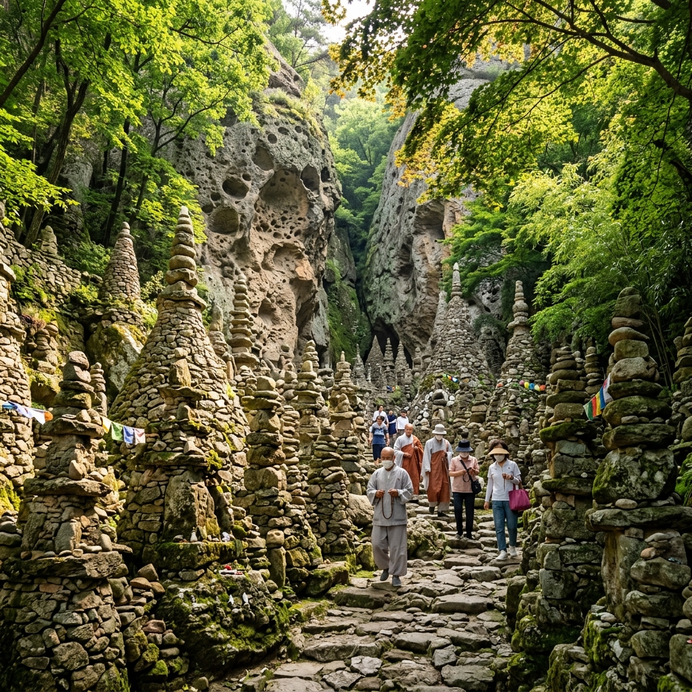
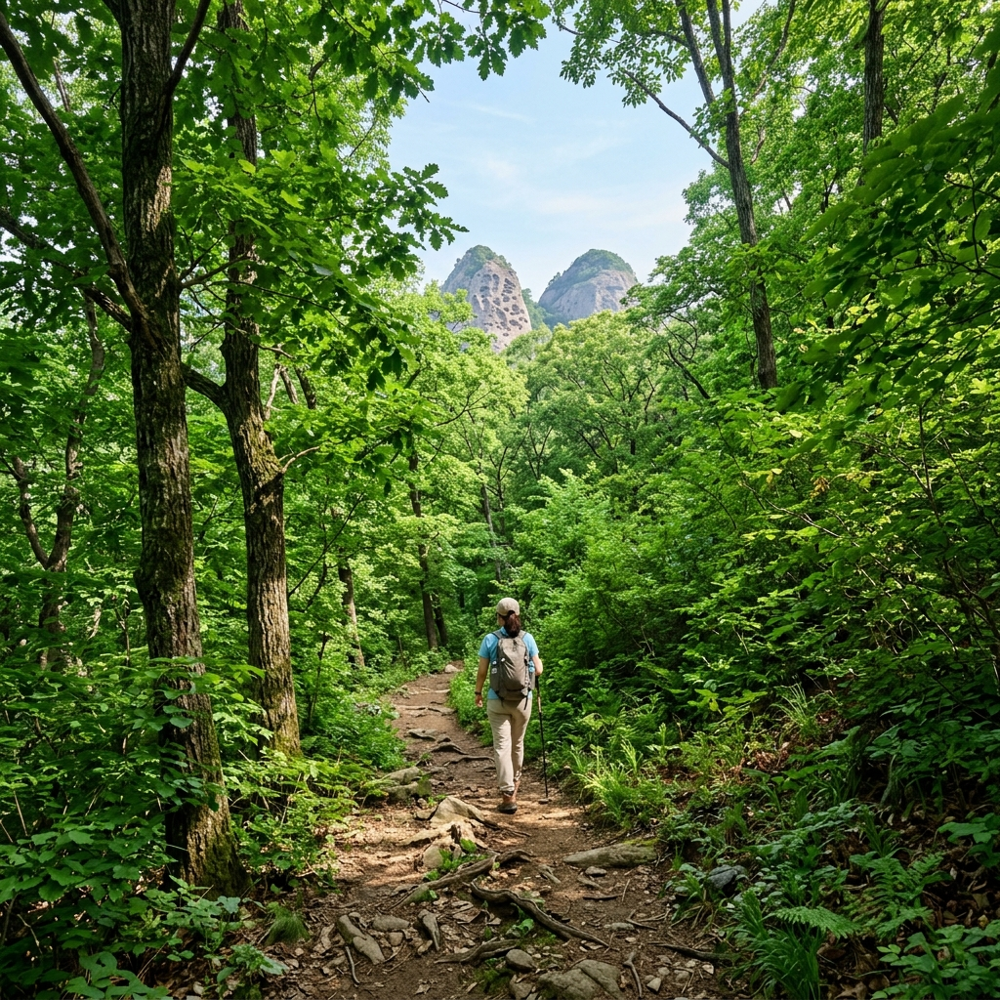

진안 마이산 신록 트레킹 2026 — 두 봉우리 사이 초록 물결과 탑사 돌탑 명상 완전 가이드
전북 진안의 마이산(馬耳山)은 말의 두 귀를 닮은 기묘한 바위 봉우리로 유명한 국내 유일무이한 타포니 지형 명소입니다. 봄의 벚꽃, 가을의 억새, 겨울의 역고드름으로 계절마다 이름을 알려 온 마이산이지만, 6월의 신록(新綠) 시즌은 의외로 가장 한적하면서도 가장 풍요로운 풍경을 자랑합니다. 두 봉우리 사이로 초록빛 잎들이 가득 들어찬 골짜기, 그리고 돌탑 80여 기가 빼곡히 늘어선 탑사의 고요한 명상 공간. 이 글에서는 2026년 6월 기준 마이산 완전 방문 가이드를 상세히 안내해 드립니다.
🏔️ 마이산이란? — 말 귀를 닮은 신비로운 바위산의 정체
마이산은 전라북도 진안군에 위치한 도립공원으로, 두 개의 커다란 바위 봉우리가 나란히 솟아 마치 말의 두 귀처럼 보인다 하여 붙여진 이름입니다. 숫마이봉(680m)과 암마이봉(686m)이 나란히 솟아 있으며, 신기하게도 암마이봉이 더 높습니다.
마이산을 특별하게 만드는 것은 단순한 바위산이 아닌 타포니(Tafoni) 지형이라는 점입니다. 타포니란 암석이 수분과 온도 변화, 풍화·침식 작용으로 인해 표면에 마치 벌집처럼 크고 작은 구멍들이 뚫리는 지질 현상으로, 마이산의 이수성 역암(礫岩)에서 수억 년에 걸쳐 형성된 것입니다. 세계적으로도 드문 이 지형 덕분에 마이산은 지질학적 가치를 인정받아 도립공원으로 지정된 것은 물론, CNN이 선정한 한국의 아름다운 절경 목록에도 이름을 올렸습니다.
6월이 되면 타포니 구멍 하나하나 사이로 초록빛 이끼와 잡풀이 돋아나고, 두 봉우리를 잇는 골짜기 전체가 활엽수 신록으로 뒤덮입니다. 숲의 캐노피가 완성된 6월의 마이산은 4월의 벚꽃 군중 없이 조용히 산책을 즐기기에 더없이 좋은 계절입니다.

6월 신록에 감싸인 진안 마이산 두 봉우리 전경 / AI 제작 이미지
📅 2026년 6월 방문 최적 시기 및 기상 정보
6월의 마이산은 날씨와 자연환경 측면에서 방문하기에 이상적인 조건을 갖춥니다. 전북 진안은 분지 지형의 영향으로 내륙 기온이 비교적 서늘하며, 6월 평균 기온은 낮 22~26°C, 새벽·이른 아침에는 14~17°C 수준을 유지합니다. 오전 7~10시 사이에 방문하면 산 아래 분지에 약한 물안개가 피어오르는 신비로운 풍경을 만날 수 있습니다.
방문 최적 시기는 6월 1일부터 6월 20일 사이입니다. 이 기간에는 장마가 본격적으로 시작되기 전이기 때문에 맑고 건조한 날씨가 유지될 가능성이 높습니다. 장마 전선이 북상하는 6월 말부터는 우천이 잦아지므로, 사전에 기상청 예보(기상청 1기상대 전북지방기상청)를 반드시 확인한 뒤 방문하시기 바랍니다.
주말 방문 시에는 오전 9시 이전에 도착하는 것을 강력히 권장합니다. 6월은 관광 비수기이지만, 맑은 주말에는 진안 일대 사진 동호회 모임이 집중되어 남부 주차장이 오전 10시 전에 만차가 되는 경우가 있습니다. 평일 오전은 전국에서 가장 한적하게 마이산을 즐길 수 있는 황금 시간대입니다.
🅿️ 주차 및 입장 안내 — 성인 3,000원, 주차 무료
마이산 방문 시 가장 먼저 확인해야 할 것은 두 개의 주차장 중 어디를 이용할지입니다. 남부주차장(탑사 방면)과 북부주차장(은수사·비룡대 방면)이 있으며, 탑사가 마이산의 핵심 명소인 만큼 대부분의 방문객은 남부주차장을 이용합니다.
| 구분 |
내용 |
| 공원 입장료 |
무료 |
| 탑사 시설 이용료 |
성인 3,000원 / 청소년(중·고등학생) 2,000원 / 어린이(초등학생) 1,000원 |
| 운영시간 (하절기 3~10월) |
오전 09:00 ~ 오후 18:00 |
| 남부주차장 |
무료 (약 200대 수용) |
| 대중교통 |
전주시외버스터미널 → 진안터미널 (약 50분) → 마이산행 군내버스 |
| 내비게이션 |
"마이산 탑사 주차장" 검색 (전북 진안군 마령면 마이산남로 367) |
주차장에서 탑사까지는 완만한 오르막 길을 따라 약 15~20분 도보로 이동합니다. 길 양옆으로 6월에는 마이산벚나무·산벚나무·당단풍나무 등의 활엽수가 울창하게 이어져 걷는 내내 녹음 터널 속을 산책하는 기분을 줍니다.
🪨 탑사(塔寺)의 비밀 — 이갑용 처사와 80기의 돌탑 이야기
마이산 방문의 하이라이트는 단연 탑사(塔寺)입니다. 탑사는 정식 사찰이라기보다는 한 인간의 신앙과 집념이 만들어낸 기적 같은 공간입니다. 조선 말기 이갑용(李甲用) 처사는 1885년부터 이 산골 골짜기에 홀로 들어와 마이산의 독특한 돌을 하나씩 손으로 날라 탑을 쌓기 시작했습니다. 시멘트도, 접착제도 없이 오로지 돌의 무게중심을 맞춰 세운 천지탑(天地塔)을 비롯한 80여 기의 석탑이 오늘날 우리 앞에 놓여 있습니다.
이갑용 처사는 평생 독신으로 탑 쌓는 일에만 전념하다 1912년 세상을 떠났고, 그 후 후손들이 이 공간을 지키며 오늘에 이르렀습니다. 가장 높은 천지탑은 무려 13.5m에 달하며, 겨울에는 탑 속에서 자라는 고드름이 아래로 내려오지 않고 위를 향해 자라는 '역(逆)고드름' 현상이 관측되어 또 다른 불가사의로 꼽힙니다.
6월의 탑사는 돌탑 사이사이로 우거진 나뭇잎들이 초록 장막을 드리우며, 햇살이 그 틈새로 비집고 들어와 탑 위에 광점을 만드는 장관을 연출합니다. 탑사 내부는 사진 촬영이 허용되며, 경건한 자세로 조용히 감상하는 것이 예의입니다. 도시의 소음에서 완전히 단절된 이 공간에서 잠시 명상에 잠겨보시길 권합니다.

마이산 탑사 — 80여 기의 돌탑이 6월 신록 속에 늘어선 풍경 / AI 제작 이미지
🥾 추천 트레킹 코스 — 남부 순환 코스 약 5km
마이산 방문 시 가장 많이 이용되는 코스는 남부순환코스입니다. 남부주차장에서 시작해 탑사를 거쳐 암마이봉 7부 능선을 돌아 다시 돌아오는 약 5km, 소요시간 2시간 30분~3시간 내외의 코스입니다.
① 남부주차장 출발 (0km) → 완만한 포장길을 따라 탑사 방면 진입
② 탑사 도착 및 관람 (1.2km) → 80여 기 돌탑 감상, 소요 약 30분
③ 탑사 위 능선 전망 포인트 (1.8km) → 두 봉우리와 진안 분지 전망 최고 뷰
④ 은수사(銀水寺) 경유 (2.8km) → 신라 시대 창건 고찰, 유명한 은행나무·청실배나무
⑤ 북부 탐방로 하산 (4.2km) → 완만한 능선 길을 따라 북부 주차장 방향 하산
⑥ 남부주차장 복귀 (5.0km) → 연결로 이용 또는 셔틀버스 이용
암마이봉 정상은 일반 탐방로에서 올라갈 수 없으며, 숫마이봉 정상도 절벽 지형으로 인해 일반인 접근이 불가합니다. 그러나 7부 능선까지 오르면 진안 분지 전체를 내려다보는 탁 트인 전망이 펼쳐지므로 충분히 만족스러운 트레킹이 됩니다.
🌿 6월 마이산의 자연 생태 — 타포니 구멍 속 숨은 생명들
6월의 마이산은 생태 탐방의 관점에서도 매우 흥미롭습니다. 바위 표면의 타포니 구멍 속에는 고사리류, 이끼, 바위취 등 다양한 암생 식물이 자리 잡고 있습니다. 특히 마이산 고유의 식생 환경은 독특한 미기후(微氣候)를 형성해, 분지 특유의 기온 역전 현상 덕분에 다른 지역보다 더 다양한 식물이 서식합니다.
탐방로 주변에는 6월이 되면 금계국(金鷄菊)의 노란 꽃이 군락을 이루며 트레킹 내내 발길을 환하게 맞이합니다. 주변 계곡에서는 피라미·버들치 같은 1급수 어류와 반딧불이가 서식하는데, 초저녁 탐방 시에는 반딧불이가 날아오르는 장면을 목격하기도 합니다. 이러한 생태 풍요로움은 마이산이 단순한 지질 명소를 넘어 자연 생태계의 보고임을 증명합니다.
🍽️ 진안 현지 맛집 — 방문 전 알아두면 좋은 먹거리 정보
마이산 트레킹을 마친 뒤에는 진안읍내로 나가 현지 특산 음식을 즐기시기 바랍니다. 진안은 홍삼·인삼의 산지로 유명하며, 읍내 곳곳의 식당에서 인삼을 넣은 백숙이나 삼계탕을 저렴하게 즐길 수 있습니다.
탑사 인근에는 '마이산막걸리'로 유명한 소규모 양조장이 운영하는 주막식 식당이 있으며, 이곳의 도토리묵과 파전은 현지인들이 적극 추천하는 안주·식사 메뉴입니다. 막걸리 한 사발과 함께하는 산채 나물 백반(1인 8,000~10,000원)도 탐방 후 허기진 배를 든든히 채워줍니다. 방문 전 포털에서 영업 여부를 미리 확인하시면 더욱 좋습니다.
💡 꿀팁: 진안 마이산 남부 매표소 앞 편의점(GS25)에서는 간단한 에너지바·생수·비상 우비를 구매할 수 있습니다. 산이라도 6월은 더위가 있으므로 물 1L 이상을 반드시 지참하시기 바랍니다.
🏨 숙박 정보 — 진안·마이산 일대 추천 숙소 유형
마이산 방문을 당일치기로 마무리하기 아쉬운 분들을 위해 숙박 정보를 안내해 드립니다. 진안읍 인근에는 모텔·게스트하우스 위주의 숙박 시설이 밀집해 있으며, 1박 기준 4~7만 원 수준의 합리적인 숙박이 가능합니다.
마이산 주변 자연환경을 더욱 가까이서 즐기고 싶다면, 남부 탐방로 입구 인근의 펜션과 캠핑장을 이용하는 방법도 있습니다. 특히 마이산 오토캠핑장은 마이산을 배경으로 텐트를 치고 별빛 아래에서 하루를 보낼 수 있어 캠핑 동호인들에게 인기를 끌고 있습니다. 사전 예약 필수이며, 캠핑장 이용요금은 1박 25,000~35,000원 수준입니다.

마이산 남부 탐방로 — 6월 신록 터널 속 아침 산책길 / AI 제작 이미지
📍 연계 여행 코스 — 진안 하루 이틀 일정 제안
마이산 방문을 더욱 풍성하게 만들려면 인근 진안 여행지를 함께 묶는 것을 권장합니다.
당일치기 추천 코스: 마이산 탑사 트레킹(3시간) → 진안읍 점심(홍삼삼계탕) → 운일암반일암(雲日巖盤日巖) 주차 후 계곡 산책(1시간 30분) → 전주 방향 귀가
1박 2일 추천 코스: 1일차 — 진안 마이산 탑사 + 은수사 + 비룡대 전망 / 2일차 — 운일암반일암 계곡 트레킹 + 진안 홍삼한방시장 쇼핑 + 성수산 자연휴양림 산책
진안에서 약 30분 거리의 무주 덕유산이나 장수 논개사당까지 연계하면 2박 3일 전북 내륙 여행으로도 충분한 콘텐츠가 됩니다.
✅ 방문 전 체크리스트 — 이것만 챙기면 완벽
| 준비물 |
이유 |
| 트레킹화 또는 운동화 |
탑사 인근 비포장 돌길 구간 존재 |
| 생수 1L 이상 |
탑사 내부 매점 없음, 등산로 중간 물 보충 불가 |
| 현금 |
탑사 입장료 카드 결제 불가 (현금 전용) |
| 자외선 차단제 |
6월 자외선 지수 높음 (UV Index 6~8 수준) |
| 간편 우비 또는 우산 |
6월 산간 지형 돌발 소나기 대비 |
#마이산
#진안여행
#마이산탑사
#6월여행
#신록트레킹
#타포니지형
#전북여행
#국내여행
#마이산도립공원
#진안군